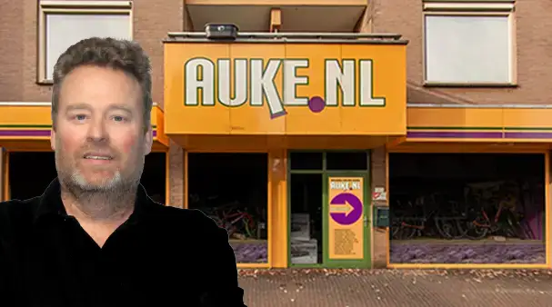
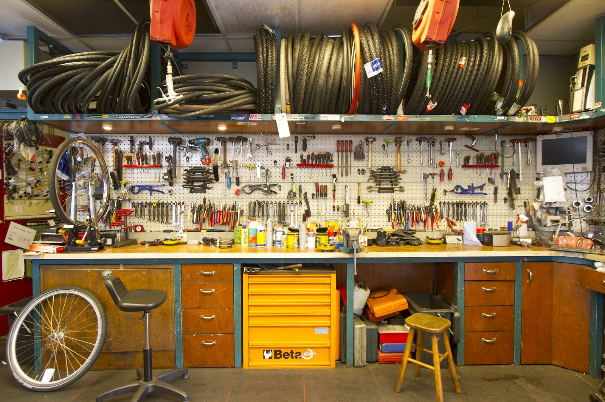
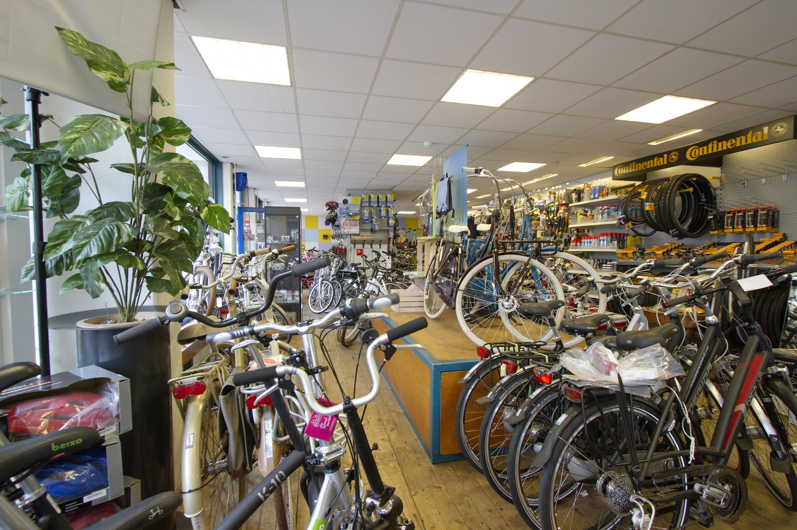
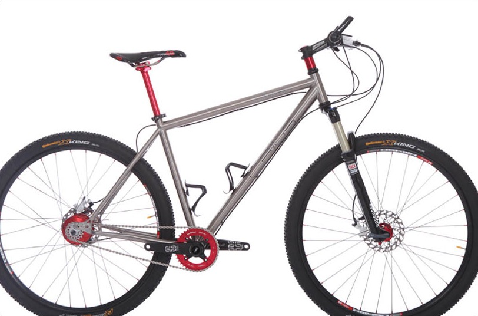
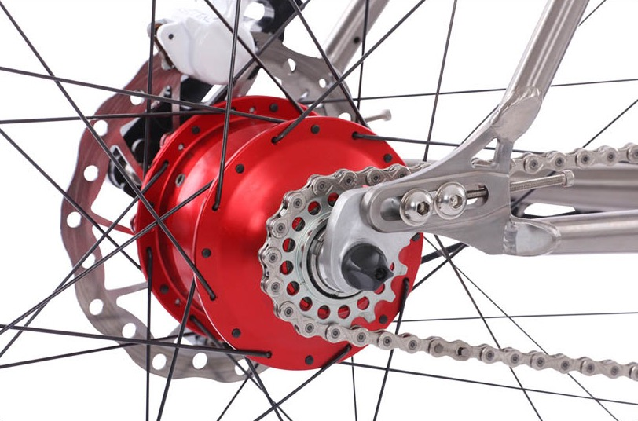
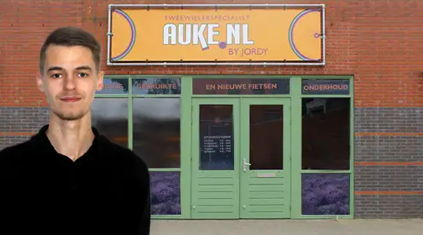
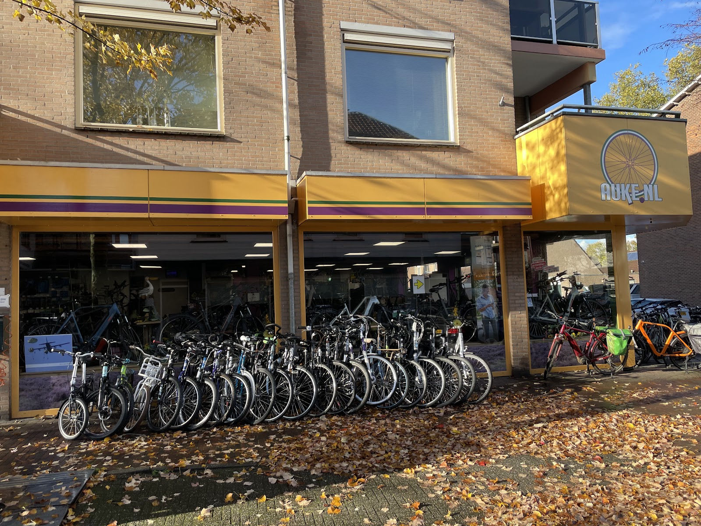

Auke.nl by Auke
keuze 1Notaris Fischerstraat 7, Ede-Centrum. Reparatie, onderhoud en verkoop.
Fietsenmaker in Ede
Tenzij er onderdelen besteld moeten worden. Kunt u uw fiets niet zelf brengen? Wij halen hem op en brengen hem terug.

Van een lekke band tot nieuwe remmen, kabels en ketting. Voor alle merken, nieuw of gebruikt.
Eerlijk advies en een duidelijke kostenindicatie voordat we beginnen. Zo komt u niet voor verrassingen te staan.
Een kleine reparatie terwijl u het centrum in gaat? Dat lukt vaak. Vraag even of er ruimte is in de planning. Duurt het toch langer, dan denken we met u mee.
Lukt het niet om zelf langs te komen? Wij kunnen uw fiets ophalen en weer thuisbrengen. Bel ons om het af te spreken.
Brengt u uw fiets voor een diagnose of reparatieofferte en besluit u de reparatie niet te laten doen? Dan kunnen we onderzoekskosten rekenen.
4,3 uit 144 Google-reviews
"Auke heeft mijn 'oude' fiets weer voorzien van nieuwe remmen, kabels, tandwielen & ketting. Zéér goed geholpen. Auke legt uit wat hij vervangen heeft -en waarom. Hij zal geen (extra) kosten maken en / of berekenen, wanneer het niet nodig is, of als de fiets het niet meer waard is. De fiets rijdt weer als NIEUW!"
"Vandaag heeft Auke een IPhone-hoesje met SP-connector op mijn fiets gemonteerd. Fluitje van een cent? Echt niet! De beste man is er ruim 45 minuten mee bezig geweest omdat het niet ging zoals het moest en hij het wilde. Met een flinke dosis humor, creativiteit en geduld is het gelukt."
"Een jaar geleden hebben wij Auke gevraagd om een goede verende zadelpen voor mijn vrouw die net een zware operatie had ondergaan. Hij rade ons aan een speciale zadelpen met dubbele vering. Mijn vrouw was zeer sceptisch maar Auke was volhardend. 'Mevrouw, het is de beste zadelpen voor uw situatie'."
"Via internet had ik onderdelen besteld voor een mountainbike. Zelf kom ik niet veel verder dan het plakken van een band dus daarom ben ik naar Auke gegaan om hem in elkaar te laten zetten. Hij was meteen enthousiast."

Allerlei merken en soorten voor een redelijke prijs. En bij elke aankoop de service van echte fietsenmakers, die uw fiets daarna ook onderhouden.
Vaste merken: Batavus, Sparta, BSP, Popal, MultiCycle en Freebike. Iets anders in gedachten? Alles is mogelijk, vraag het gerust.
CRIUS
Crius is de eigen titanium fiets van Auke.nl, op maat gemaakt. Het begin is een titanium frame, de rest ontwerpt u samen met Auke. Hij zet de fiets in elkaar en levert hem pas als hij past. En dan past hij precies, net als een maatkostuum.
Vraag naar de Crius

Bel 0318 615 228 en kies 1 voor Auke in het centrum of 2 voor Jordy in Ede-zuid.

Notaris Fischerstraat 7, Ede-Centrum. Reparatie, onderhoud en verkoop.

Hoge Manen 3A, Ede-zuid. Reparatie en onderhoud.
